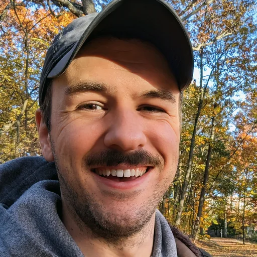

Digital Creative Producer / S-Tier Nerd
David Riemer
I'm an agency-tested video editor turned digital alchemist, with over a decade's worth of experience using Premiere Pro, After Effects, and Photoshop. These days I'm drawn to what can't be crafted with the click of a button: deep-dive research and complex content coordination. The tools are only going to get more powerful, but bespoke solutions have always been the best ones. And they still are!
This video is not the CV you're looking for. It's not here to name-drop clients, explain techniques, or dazzle with polish and refinement. This video is for me to show folks more of what I do as an extension of who I am. It's to distill hours of early morning heutagogy into a few flashy frames. It's to demonstrate that my initiative doesn't come from a direct deposit. And perhaps most importantly, it's a sanctuary for puns like "JSTOR-acle" (which are an endangered species).